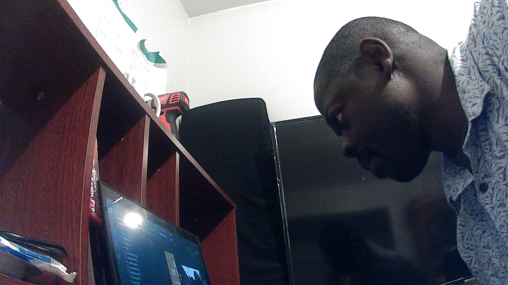

Awa is an Institutional Counselor and IT specialist with a decade of successful experience in developing websites and helping private clients with computer/programming issues.
Has volunteered in private businesses guiding them in following project management principles guiding them in initiating, planning, executing, monitoring and controlling, and closing. Has also provided Project Management Consulting services for individuals and students for years now.
Awa also spends time in analyzing, designing and implementing information systems. He is a husband and father of three Boys.
EDUCATION
Full stack Developer University of Washington Seattle to-date.
Project Management University of Washington Tacoma 2017 USA.
Nursing Assistant Certification Washington USA.
BS in Computer Science Kampala International University Kampala, Uganda 2013; World
Education Services (WES) evaluated for US equivalency.
Science Laboratory Technology SLT Kyambogo University 2007 Uganda.